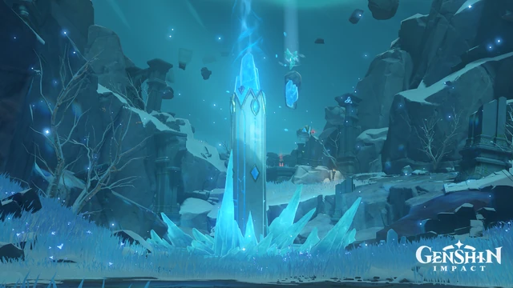

Mondstadt · Relics & Equipment
The Skyfrost Nail
The Skyfrost Nail is a huge object found above Dragonspine, surrounded by the ruins of an ancient settlement.

The Pillar That Froze a Mountain Kingdom
Soaring atop the frozen, blizzard-whipped peak of Dragonspine sits the Skyfrost Nail, a colossal, glowing celestial monolith shattered into floating fragments around a swirling core of icy atmospheric power. For millennia, travelers in Mondstadt looked up at the frozen mountain with dread, believing the blizzard was natural.
However, ancient stone carvings and archaeological murals hidden throughout the mountain's subterranean chambers reveal a horrifying truth: Dragonspine was once a lush, verdant mountain kingdom named Sal Vindagnyr, blessed with gentle breezes, green valleys, and an immense Irminsul silver tree. Its prosperity was obliterated in an instant when Celestia dropped the Skyfrost Nail directly from the sky, shattering the mountain's climate into a perpetual, killing winter.
The Destruction of Sal Vindagnyr
When the Skyfrost Nail struck the mountain, the impact shattered the sacred Irminsul tree into petrified wooden shards, severed the local Ley Lines, and unleashed an unnatural blizzard that extinguished all agriculture within days. The princess of Sal Vindagnyr, gifted with prophetic visions, attempted to graft the dying tree with her tears and blood, but the cold proved absolute.
The champion knight Imunlaukr traveled into the outer world seeking a miraculous cure to save the kingdom, but by the time he returned, everyone—including the princess, the royal court, and the citizens—had frozen to death in their stone halls. Leaving behind only tragic stone murals and a bloodstained greatsword, Imunlaukr walked away, leaving the frozen kingdom to sleep beneath the snow for thousands of years.
The True Purpose: Celestial Quarantine
While early scholars believed the Skyfrost Nail was a weapon of divine punishment against mortals who sought to question the heavens, deeper archaeological discoveries in The Chasm, Sumeru's Mt. Damavand, and ancient Fontaine reveal a more complex, terrifying reality: the Celestial Nails are quarantine weapons.
Whenever a mortal kingdom began experimenting with Abyssal corruption, pierced the firmament, or suffered from leaking Forbidden Knowledge, Celestia deployed a Celestial Nail to crush the epicentre. The nails act as metaphysical anchors, pinning down the land to suppress the chaotic, reality-dissolving poison of the Abyss. Sal Vindagnyr's freezing was collateral damage in a brutal celestial campaign to keep Teyvat's elemental order from unraveling.
Awakening and Restoration
During the Traveler's exploration of Dragonspine alongside the Chief Alchemist Albedo, the three crystalline shards that broke off during the initial impact were thawed and restored to the central nail. As the monolith reassembled itself and rose into the sky above the summit, the suffocating blizzards around the peak began to clear, allowing sunlight to touch the frozen ruins for the first time in millennia.
The Skyfrost Nail stands as an unforgettable monument to Teyvat's tragic history: a testament to both the terrifying, ruthless power of the Heavenly Principles and the fragile beauty of mortal civilizations caught beneath heaven's hammer.
This is an original CoreGG reading guide, not an official HoYoverse article or a reproduction of the game text. Source links below identify the records used so you can check the original context.
Sources & references
Check these sources for the original game text and reference trail.